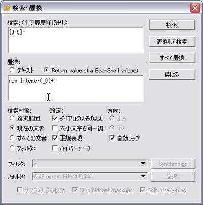

テキストの行ソートを行います。
重複行を削除する機能があります。
クリップボード拡張ツールです。
クリップボードの履歴を取ることができます。
また、定型文の貼り付け、マクロなども備えています。
履歴を他のツリーにドラッグ＆ドロップするだけで定型文に登録できます。
＜キーボード操作＞
Shift * 2：ウィンドウを開く（カスタマイズ可）
便利な機能として、ストックモード
があります。
クリップボードの内容を溜め込み、
Ctrl+Vを押すことで一つずつ貼り付ける機能です。
(Flashによるデモ)
ウィンドウの切り替えを伴うコピー＆ペーストは面倒なものですが、
クリップボードに溜め込み、連続して貼り付けることでウィンドウ切り替えの手間を低減できます。
オープンソースのマージツールです。
ファイル内の差異を見やすく表示します。
この手のツールには編集機能を持たないものも多いですが、
WinMargeは比較画面からのファイル編集が可能です。
フォルダ全体の比較も行うことができ、パッチを作る際にも役立つでしょう。
軽量で多機能なSDIのテキストエディタです。
秀丸に比べてもサクサク感があります。
DMonkey(javascript)で独自に機能拡張することができます。
基本機能がしっかりしており、2008年現在で最も人気のあるエディタの一つです。
プラグインで拡張可能なJava製エディタです。
自動補完や折りたたみも利き、IDEといっていいレベルまで拡張することができます。
ただし起動は遅く、著者の環境（XPpro,
Pen4 3GHz,
MEM1G）では
20秒程度かかります（プラグインの読み込みや、VM起動のせいもあるとは思いますが）。
マクロ言語として、Javaに似た文法のスクリプト言語BeanShellを採用しています。
BeanShellは置換ダイアログ中でも使えます。

たとえば、このような置換をかけると、ドキュメント内の数値をインクリメントできます。
ちょっとしたJavaコードで複雑な処理をこなせるので、Java使いにはお勧めです。